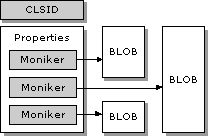
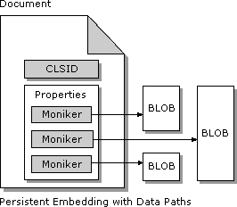
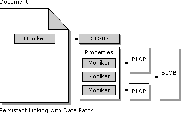

| ||||||
The impetus for much of the work in this article finds its origins in the concept of "progressive rendering" ("progressive disclosure") for something like a picture or a picture control. In such cases, the picture should be able to display an initial low-detail picture, followed by mid-detail and high-detail renderings.
This article is, however, concerned with the more general problem of retrieving any significant amounts of data in a cooperative fashion from possibly many distributed locations after the control has already been instantiated and is possibly interacting with the container and the user in other ways. This capability has been called "Progressive Rendering," "Progressive Property Disclosure," and "Progressive Downloading." The term "Progressive Data Retrieval" will be used to refer to all of these more special cases at once, because it makes no assumptions about the exact type of data that is being retrieved—for example, it might be properties, might be images, might be anything.
In all the following sections, it is very important to keep in mind that the control is ultimately responsible for specifying the exact format and structure of any linked data and deciding exactly how it will be pulled from the named source. The container has nothing to do with this, other than being able to control the relative priority of the retrieval and being notified when the loading state of a control changes. So, for example, a container doesn't have to care about how a picture control chooses to progressively render low-, mid-, and high-detail images (from a GIF, for instance). The picture control would internally know where and how each image is stored in its data, and retrieve those in turn. The container would then be notified through IAdviseSink::OnViewChange when the control has enough data to do something meaningful in IViewObject2::Draw (which is a moot point for an in-place active control whose window is visible, because the control would just update itself, but this will be important later on for windowless controls).
The point is that the container chooses where to tell controls to store and retrieve their data; the controls choose how to store and retrieve that data in a cooperative, asynchronous, and progressive manner. The asynchronous aspect can apply to none, some, or all of a control's data.
This section is, thus, about "Data Path Properties," and describes the architecture for having a control save and load pieces of its data (BLOBs especially) in locations other than where the control's properties are kept. That is, for any number of reasons, it might be inappropriate or impossible for a control to store absolutely all of its data in the same location as its properties. Here are some examples:
To address these particular concerns, a control can use one or more "Data Path Properties" to reference external sources of data. As shown in the following illustration, each "path" (as they're called for short) is a value of some kind that is stored like any other properties in the control's persistent data. When the control needs to retrieve data from a source, it has the container create a moniker from the string representation of the property value and calls IMoniker::BindToStorage to retrieve some sort of storage pointer (usually IStream, but not limited to that). In binding a URL moniker, the control can choose whether the binding itself will be synchronous or asynchronous, and whether the data transfer itself will be synchronous or asynchronous.

In short, each path property is a control-managed "link" to an outside data source. As described in an earlier section, this capability has always been available in OLE Documents, except that such links were always internal to the control. Such hidden use of external resources is not acceptable in the Internet environment where authoring tools need to manage the interconnections between many Internet sites.
Data Path Properties address the following issues:
Linking capabilities using path properties are equally usable in both the Persistent Embedding and Persistent Linking cases as described in an earlier section. For clarity, the combinations of Persistent Embedding and Persistent Linking with Data Path Properties are shown in the following illustrations.


With data paths, a control can allow its persistent data to be distributed around a file system or the Internet. For example, a sophisticated motion-picture control can separately reference its AVI data, its audio data, and a lengthy text transcript of the dialog box. The control could then have MoviePath, AudioPath, and TranscriptPath properties. In a similar manner, a picture control might store three separate detail images and use the properties LowDetailImagePath, MediumDetailImagePath, and HighDetailImagePath (and maybe the motion picture control uses these three as well to provide progressive rendering of a static image—anything is possible). This document places no restrictions on the exact data formats stored in locations given to path properties—the control ultimately determines the formats it can employ.
The following sections provide information about data path properties, starting with how a control exposes its path properties and the data formats associated with those paths. This is followed with a discussion of how path values are assigned, how a control saves a path property, and how a control uses a property to retrieve data asynchronously. A later section describes how the control communicates its "readiness" to a container and how the container handles different readiness states.
The following characteristics apply to publicly exposed path properties and controls that provide them:
The HTTP Accept: syntax is summarized as follows:
<field> = Accept: <entry> *[ , <entry>
<entry> = <content type> *[ ; <param> ]
<param> = <attr> = <float>
<attr> = q / mxs / mxb
<float> = <ANSI-C floating point text representation>
as in:
Accept: text/plain, text/html, image/* Accept: text/x-dvi; q=.8; mxb=100000; mxt=5.0, text/x-c
A "custom attribute" as now supported in type information is defined using the keyword custom with a (GUID, value) pair as arguments for the attribute. This is shown in the following example:
#define GUID_PathProperty 0002DE80-0000-0000-C000-000000000046
[id(1), bindable, displaybind, propget, custom(GUID_PathProperty,
"text/plain;
q=0.5, text/html, text/*")]
BSTR TranscriptPath(void);
This defines the BSTR property TranscriptPath as a path property with the types of plain text, HTML text, and other text (using HTTP Accept: syntax). This information is retrieved from the type information through the new type library interface ITypeInfo2 as described in the next section.
As an example of defining path properties in this way, consider a control that has an AVI MoviePath property, a RIFF AudioPath property, and an ANSI text TranscriptPath property that would include them in its type library this way (in ODL syntax; exact MIME types have been omitted because the code below is demonstrating the definition of multiple properties).
#define GUID_PathProperty 0002DE80-0000-0000-C000-000000000046
#define GUID_HasPathProperties 0002DE81-0000-0000-C000-000000000046
[<attributes>]
library
{
importlib <path to header that includes GUID_PropertyPath and
GUID_HasPathProperties>
[<attributes>]
interface IMyObjectProperties
{
// Other stuff here...
[id(1), bindable, displaybind, propget, custom(GUID_PathProperty, "...")]
BSTR MoviePath(void);
[id(1), bindable, displaybind, propput, custom(GUID_PathProperty, "...")]
void MoviePath([in] BSTR pathVideo);
[id(2), bindable, propget, custom(GUID_PathProperty, "...")]
BSTR AudioPath(void);
[id(2), bindable, propput, custom(GUID_PathProperty, "...")]
void AudioPath([in] BSTR pathAudio);
[id(3), bindable, propget, custom(GUID_PathProperty, "...")]
BSTR TranscriptPath(void);
[id(3), bindable, propput, custom(GUID_PathProperty, "...")]
void TranscriptPath([in] BSTR pathText);
// Other stuff here...
}
[<other attributes>, custom(GUID_HasPathProperties, "3")]
coclass MyObject
{
interface IMyObjectProperties;
...
}
}
Authoring tools and other containers will want to know exactly which control properties are, in fact, data path properties as well as the type of data that should be referenced through each property. This allows the authoring tool to effectively enumerate data paths and retrieve their current values, which is useful when the authoring tool needs to update any such properties to perform link management.
First, to determine if any particular control has any path properties, the authoring tool should perform the following actions:
Having this knowledge in hand, the authoring tool can then enumerate the properties in any of the control's incoming interfaces and check if those properties are data paths by using the following procedure. These steps assume that pTI2 is the ITypeinfo2 pointer to one of the control's interface or dispinterface entries (available through the ITypeInfo of the control's coclass).
What then does a tool do with such knowledge of paths and their data types? There are three general scenarios:
Of course, the sophistication of the authoring tool is almost limitless. With the tagging and MIME-typing of data path properties, this document guarantees that any such tool can always determine the data format associated with a path. It's then a matter of whether the tool recognizes that GUID.
The values of path properties—the strings that identify storage locations—are assumed to be assigned only at author time. In this case there are two possibilities:
In both cases, a change in the value of any path property will generate a call to any connected IPropertyNotifySink interface's OnChanged member, because path properties are marked with [bindable]. In both cases, an authoring tool that displays its own property browsing UI would update itself to reflect the current state of the control. This also gives the authoring tool the chance to modify the path when the user changes it through the control's property pages directly. When the user makes the change, the control will notify the authoring tool through OnChanged. The authoring tool then reads the new value of the path property, modifies it as necessary, and sends the modified value back to the control. Therefore, in both the first and second cases above, the authoring tool has the final say in the exact value assigned to any path property.
The most preferable case is where the value is simply a container-relative name. Relative file names and URLs are identical in form: "../pictures/tree.bmp" serves equally well in both the local file system and Internet environments. Relative item names, such as "!Picture 6", identify the path as pointing to some other part of the same container document. In URL cases, the name can be absolute, which indicates that there's no relative path between the container document and the location described in the data path.
In any case, a control must always obtain some moniker from a data path name to bind to the storage so referenced. Because the name can only be relative, the container is always given the chance to create the actual moniker itself. The details of this are covered in the next section.
Use of relative names allows an authoring tool to move the root document—and possibly an entire site—around, without invalidating any external links stored in data paths. For example, consider the author-time case where the document being created is stored in "c:\pages\mypage.doc" and in that document is a bitmap control with an ImagePath property. The authoring tool assigns the name "frog.bmp" to this property. When the control wants to access the bitmap named in the ImagePath property, it passes "frog.bmp" to the authoring tool and asks for a moniker in return. The authoring tool sees two file names and can combine them into one "c:\pages\frog.bmp" name. The authoring tool then returns this name in a moniker so that the control can bind that moniker and retrieve the data.
Now when the author saves the document to an Internet site at publish time, the location of the document changes to something like "http://www.bogons.com/bogazoid/mypage.htm". In addition, the authoring tool copies "frog.bmp" to that same site, where it becomes "http://www.bogons.com/bogazoid/frog.bmp". At run time, the control reloads the path property name "frog.bmp" and asks the container to make it a moniker. The container simply combines the document URL with the relative name "frog.bmp" to generate the exact URL for the bitmap.
In some cases, the control might have obtained an absolute file name (or URL) from its own property pages at author time. So, for instance, the user types "c:\pages\frog.bmp" instead of just "frog.bmp." Initially, the control will internally save the absolute string, but because it sends an OnChanged notification (data path is [bindable]), the authoring tool retrieves this new value and computes the relative path to that same file from the document's current location (using the file moniker's RelativePathTo member, for example). The relative path in this case will end up as just "frog.bmp", which the authoring tool simply assigns back to the control.
In the case where the user gives a control an absolute URL, there's nothing the authoring tool can do at author time when the document is stored on a local file system. At publish time, however, the authoring tool first determines the new URL of the document. It can then cycle through all known path properties of each control before it saves that control. If the authoring tool finds an absolute URL in a property, that tool can attempt to compute the relative path between the document's URL and the path's URL. When it has computed this relative path, it can assign the relative name to the path property and proceed with saving the control.
When the authoring tool supports relative path names that are not either file names or URLs, but are instead item names that identify a piece of storage in the document itself, such as "#Picture 6", the authoring tool must specify, in its own documentation, what prefix character marks the name as an item of some kind. This is a note to the container's moniker creation mechanism in IBindHost::CreateMoniker as described in the next section.
Controls should always ensure that they can produce a string for any path property. This is because all interfaces that deal with path properties (either IDispatch for the property itself or IBindHost, in a section below, for converting the string into a moniker) deal with paths as strings.
However, controls should not compare two path properties as strings. Instead, the comparison should be carried out using two monikers created from those strings through IBindHost::CreateMoniker (see below). With monikers, the comparison between pmk1 and pmk2 is the call pmk1->IsEqual(pmk2) or pmk2->IsEqual(pmk1).
A sophisticated container or authoring tool will likely provide its own browsing UI for various types of data, typically the most common types of data that would be assigned to path properties (images, sound, and video). To maintain as much of a consistent user interface as possible, a container should make such a browsing UI available to a control's property pages so that the property page can invoke that UI instead of showing its own, which would likely be inconsistent.
This integration is achieved through a container-side interface called IOleBuilderManager. An exact specification for this interface is not, however, available at this time and will be provided at a later date. The basic idea, however, is that through this interface a control's property page can test for the availability of container-side browsing UI and invoke that UI if it is available. This allows the page to enable a Browse... button for a particular path property, invoking the container's UI when that button is clicked.
Working with data paths requires, of course, the ability of the control to access data referenced by its path properties. The key part of such data access is providing some means by which the control turns a data path name into a moniker that it can bind. Because the container/authoring tool is the one that generally knows the context that modifies any relative path name, the container, in this relationship, is responsible for generating an appropriate moniker when the control asks for one.
This step happens through a container's (or authoring tool's) implementation of the IBindHost interface, which is implemented as a service available through a container site's implementation of the IServiceProvider interface, and is the topic of the next section. The control accesses the bind host implementation by calling QueryInterface(IID_IServiceProvider...) on whatever site pointer it already has and calling IServiceProvider::QueryService(SID_SBindHost). Use of the service provider means that the bind host is generally a separate object from the site, although as an implementation convenience it could be implemented on the site directly.
Of course, for a control to have a site through which it can access these services, the control must provide some means through which the container can pass its site pointer to the control in the first place. Many controls implement IOleObject, whose SetClientSite method accomplishes exactly this. However, not all controls need to implement IOleObject, so a section below describes a simple siting mechanism using IObjectWithSite to achieve the same ends.
This document requires that a control using data paths supports a siting mechanism. If the control doesn't support IOleObject, it must support IObjectWithSite. A container that supports data paths must provide a site through one of these mechanisms and must generally implement IBindHost and provide access to it through the site's IServiceProvider interface. If a control that uses paths finds itself without a container site, it can still degenerate gracefully by calling MkParseDisplayNameEx itself, as necessary.
The creation of a moniker from a potentially relative path name is what is considered a container-side "service" that a control accesses through IBindHost::CreateMoniker. In addition, a control asks its container to download data through IBindHost::MonikerBindToStorage as described in a later section.
The IBindHost interface is defined as follows:
interface IBindHost : IUnknown
{
HRESULT CreateMoniker([in] LPCOLESTR pszName, [in] IBindCtx *pBC
, [out] IMoniker** ppmk, [in] DWORD dwReserved);
HRESULT MonikerBindToStorage([in] IMoniker *pMk, [in] IBindCtx *pBC
, [in] IBindStatusCallback *pBSC, [in] REFIID riid
, [out, iid_is(riid)] void **ppvObj);
HRESULT MonikerBindToObject([in] IMoniker *pMk, [in] IBindCtx *pBC
, [in] IBindStatusCallback *pBSC, [in] REFIID riid
, [out, iid_is(riid)] void **ppvObj);
}
The CreateMoniker method takes a text string of some path—which can be absolute or relative—and returns a moniker that references the actual absolute location. That is, the container combines its known document location with the path supplied in pszName to create the resulting moniker. How the container does this depends on the document path and the type of name found in pszName, which is either something that the URL moniker can handle (including file names) or an item name referring to some portion of the container document itself.
In the item name case, a container can specify a prefix character, such as "#" or ">", that it will use to differentiate an item name from some other kind of name. This fact should be known to users of the container at author time so that those users can enter the correct names in whatever UI is used to assign path values. When the container detects its prefix character, it knows that it has to parse the name according to its own rules.
In any other case, the container creates a moniker from the text string directly using MkParseDisplayNameEx. This handles the cases where URLs are given as well as display names of file item monikers and other similar composites. If for some reason IBindHost::CreateMoniker fails, the calling control can degenerate to calling MkParseDisplayNameEx itself, but this should only be used as a last resort.
Either way, the container now has a moniker for the data path as well as a moniker naming its own document. To return a full moniker from ParseDisplayName, it calls pmkDocument->ComposeWith(pmkPath, kReturn), where pmkReturn receives the moniker to return to the caller.
This rule assumes that the document moniker class implements ComposeWith in an intelligent manner. If the document moniker is a file moniker, for example, and the path moniker is a file moniker, ComposeWith will return one file moniker with the combination. The same applies for any case where the path moniker is a URL and the document is either a file or a URL. It is even possible to mix a URL document moniker with a file moniker for the path, provided that the file moniker is not absolute (where the combination would make no sense).
When the path moniker is some item or composite, the file or URL moniker ComposeWith implementations simply create another composite.
The bottom line is that IBindHost::CreateMoniker will create a precise moniker that is the combination of the document's own moniker (obtainable through IOleClientSite::GetMoniker(OLEWHICHMK_CONTAINER)) and a moniker created from the path name. The control can use this moniker to bind, but this is not the moniker that the control should save. See below for more information on persistence.
A control that does not need IOleObject, but still requires access to its container site specifically for the purposes of accessing container-side services, must instead implement IObjectWithSite.
interface IObjectWithSite : IUnknown
{
HRESULT SetSite([in] IUnknown *pUnkSite);
HRESULT GetSite([in] REFIID riid, [out, iid_is(riid)] void **ppvSite);
}
In the absence of IOleObject a container can attempt to provide the IUnknown pointer to its site through IObjectWithSite::SetSite. IObjectWithSite::GetSite is included as a hooking mechanism, which allows a third party to intercept calls from the control to the site.
When a control needs to create a moniker from a data path, it obtains the bind host through the site's IServiceProvider interface and proceeds from there.
Did you find this topic useful? Suggestions for other topics? Write us!
© 1999 Microsoft Corporation. All rights reserved. Terms of use.